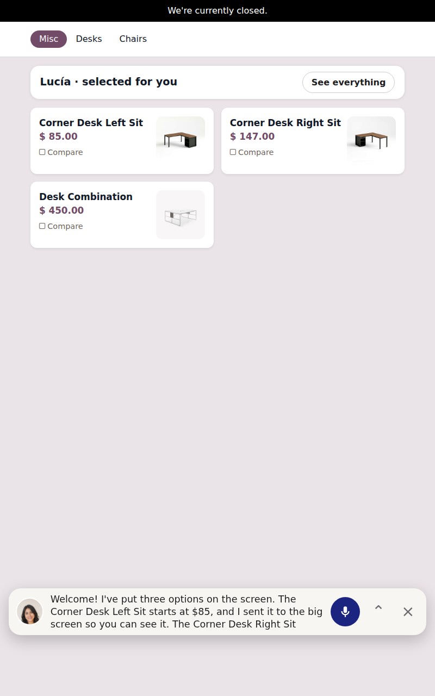

Free add-on of Self-Order Kiosk - Virtual Seller (AI). It installs by itself when both apps are present.
Odoo 19 · Self-Order Kiosk - Virtual Seller (AI) and Self-Order Kiosk Quotation. English and Spanish included.
Questions? Write to soporte@xubax.com — XUBAX.